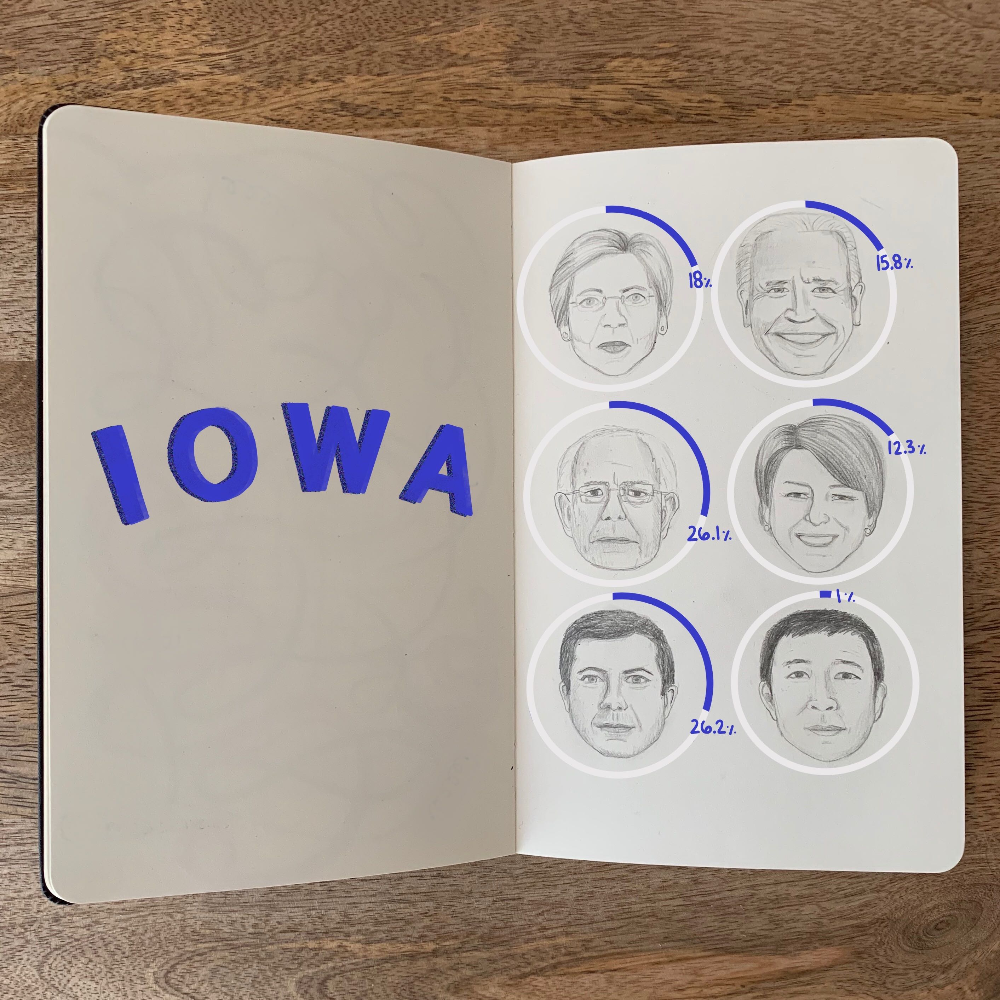

<!DOCTYPE html>
<html>
</html>
<head>
  <meta charset="utf-8">
  <meta http-equiv="X-UA-Compatible" content="IE=edge">
  <title>Sarah Fawson</title>
  <meta name="description" content="">
  <meta name="viewport" content="width=device-width, initial-scale=1">
  <meta name="robots" content="all,follow">
  <!-- Bootstrap CSS-->
  <link rel="stylesheet" href="vendor/bootstrap/css/bootstrap.min.css">
  <!-- Font Awesome CSS-->
  <link rel="stylesheet" href="vendor/font-awesome/css/font-awesome.min.css">
  <!-- Google fonts - Roboto-->
  <link rel="stylesheet" href="https://fonts.googleapis.com/css?family=Roboto:400,300,700,400italic">
  <!-- owl carousel-->
  <link rel="stylesheet" href="vendor/owl.carousel/assets/owl.carousel.css">
  <link rel="stylesheet" href="vendor/owl.carousel/assets/owl.theme.default.css">
  <!-- theme stylesheet-->
  <link rel="stylesheet" href="css/style.default.css" id="theme-stylesheet">
  <!-- Custom stylesheet -->
  <link rel="stylesheet" href="css/custom.css">
  <!-- Favicon-->
  <link rel="icon" href="images/favicon.png" type="image/x-icon">
  <!-- Tweaks for older IEs--><!--[if lt IE 9]>
    <script src="https://oss.maxcdn.com/html5shiv/3.7.3/html5shiv.min.js"></script>
    <script src="https://oss.maxcdn.com/respond/1.4.2/respond.min.js"></script><![endif]-->
</head>
<!-- 
##########################################################
~~~~~~~~~~~~~~~~~~~ Table of Contents: ~~~~~~~~~~~~~~~~~~~

* #political2020 -- Political dataviz for 2020 election
* #t1d_infographic -- T1D Infographic
* #cdcHealth -- Social Determinants of Health 
* #MICA -- MICA Design Homeworks
* #twitterTrolls -- Twitter Trolls Sentiment Analysis

##########################################################
-->
<body>
  <div id="all">
    <div class="container-fluid">
      <div class="row row-offcanvas row-offcanvas-left"> 
        <!--   *** SIDEBAR ***-->
        <div id="sidebar" class="col-md-4 col-lg-3 sidebar-offcanvas">
          <div class="sidebar-content">
            <h1 class="sidebar-heading"> <a href="index.html">Sarah Fawson</a></h1>
            <p class="sidebar-p">Data Visualization Designer and Illustrator.</p>
            <!-- <p class="sidebar-p">Originally from Texas, currently based in DC. </p> -->
            <ul class="sidebar-menu">
              <li class="sidebar-item"><a href="index.html" class="sidebar-link">Home</a></li>
              <li class="sidebar-item"><a href="about.html" class="sidebar-link">About</a></li>
              <li class="sidebar-item"><a href="detail.html" class="sidebar-link active">Dataviz</a></li>
              <li class="sidebar-item"><a href="art.html" class="sidebar-link">Art</a></li>
              <li class="sidebar-item"><a href="contact.html" class="sidebar-link">Get in touch</a><li>
            </ul>
            <p class="social">
              <a href="https://github.com/sarahfawson" target="#_blank" data-animate-hover="pulse" class="external github"><i class="fa fa-github"></i></a>
              <a href="https://www.linkedin.com/in/sarahfawson/" target="#_blank" data-animate-hover="pulse" class="external linkedin"><i class="fa fa-linkedin"></i></a>
              <a href="https://twitter.com/SarahFawson" target="#_blank" data-animate-hover="pulse" class="external twitter"><i class="fa fa-twitter"></i></a>
              <a href="https://www.instagram.com/thedatasays/" target="#_blank" title="" class="external instagram"><i class="fa fa-instagram"></i></a>
              <a href="mailto:hello@sarahfawson.com" data-animate-hover="pulse" class="email"><i class="fa fa-envelope"></i></a>
            </p>
              <div class="copyright text-center text-md-left">
              <p class="credit">&copy;2020 Sarah Fawson | Template by <a href="http://bootstrapious.com/portfolio-themes" class="external">Bootstrapious.com</a></p>
            </div>
          </div>
        </div>
        <!-- /*** SIDEBAR END ***  -->
        <!--   *** BODY DETAIL ***-->
        <div class="col-md-8 col-lg-9 content-column white-background">
          <div class="small-navbar d-flex d-md-none">
            <button type="button" data-toggle="offcanvas" class="btn btn-outline-primary"> <i class="fa fa-align-left mr-2"></i>Menu</button>
            <h1 class="small-navbar-heading"> <a href="index.html">Sarah Fawson </a></h1>
          </div>
          <!-- <div class="row" style="padding-bottom: 40px">
            <div class="col-xl-10">
              <h1>Portfolio</h1>
              <p class="text-left" id="summary">Browse some selected works by yours truly.</p>
            </div>
          </div> -->
          <!-- 2020 presidential race -->
          <div class="row">
            <div class="col-lg-10">
              <div class="content-column-content" id="political2020">
                <h2>Data Visualizations</h2>
                <p class="lead">@TheDataSays</p>
                <p>Below are some hand-drawn visualizations highlighting some aspects of the 2020 presidential race. For more, check out my instagram page
                    <a
                    target="#_blank" 
                    href="https://www.instagram.com/thedatasays/"
                    class="card-link">The Data Says</a>.
                </p>
              </div>
            </div>
            <div class="col-lg-5">
              <div class="content-column-content">
                
              </div>
            </div>
            <div class="col-lg-5">
              <div class="content-column-content">
                
              </div>
            </div>
            <div class="col-lg-5">
              <div class="content-column-content">
                
              </div>
            </div>
            <div class="col-lg-5">
              <div class="content-column-content">
                
              </div>
            </div>
            <div class="col-lg-5">
              <div class="content-column-content">
                
              </div>
            </div>
          </div>
           <!-- MICA Designs -->
           <div class="row whitespace">
            <div class="col-xl-10">
              <div class="content-column-content" id="MICA">
                <p class="lead">MICA Grad School Design Assignments</p>
                <div class="row whitespace">
                  <div style="padding-bottom:15px">
                    
                  </div>
                  <p class="text-left" id="summary">
                  <strong>Assignment Prompt:</strong>
                  Dispute someone's commonly held opinion with data.
                  </p>
                </div>
                <hr>
                <div class="row whitespace" style="padding-bottom:15px">
                  
                  
                </div>
                <div class="row">
                  <p class="text-left" id="summary">
                    <strong>Assignment Prompt:</strong>
                    My choice.
                    <br>
                    I broke this project up into two sections based on the two weeks I had. 
                    During the first week I looked for ideas, planned, and created the style guide. During the second week I created the final product.
                    I also created a version for 
                    <a
                    target="#_blank" 
                    href="https://www.instagram.com/p/B6RLoX2hQUi/?utm_source=ig_web_copy_link"
                    class="card-link">instagram</a>.
                  </p>
                </div>
                <hr>
                <div class="row">
                  <div style="padding-bottom:15px">
                    
                  </div>
                  <p class="text-left" id="summary">
                  <strong>Assignment Prompt:</strong>
                  Construct a network diagram about the African Savanna. Show the connections between the different lifeforms that live in the grassland. Your audience is high school students in Nairobi, Kenya. They know of the grasslands, but have not seen it. They do not speak English as well as they would like. This network diagram is intended to show them familiar things and teach some new vocabulary words, such as "ecosystem" and "grassland."
                  </p>
                </div>
                <hr>

                <div class="row">
                  <div style="padding-bottom:15px">
                    
                  </div>
                </div>
                <hr>
              </div>
            </div>
          </div>
          <!-- T1D Infographic -->
          <div class="row">
            <div class="col-xl-10">
              <div class="content-column-content" id="t1d_infographic">
                <p class="lead">Type 1 Diabetes Infographic</p>
                <!-- imgs-->
                  <div class="item">
                    
                    
                  </div>
                <p>I created this infographic to explain an autoimmune disease I have. I've lived with Type 1 Diabetes (T1D) for over 13 years and it has always been incredibly difficult to explain. Many people do not even know there are two types of diabetes, let alone that these two types are drastically different from each other! I want people to know what Type 1 Diabetes is, but I can't expect them to know on their own. I love educating people about T1D and helping them feel comfortable enough to ask questions and be curious about what it is like. It is really important to me to communicate in a way that is educational, positive, and also uses data to convey the gravity of a topic. It helps to have people understand what I am dealing with a daily basis, but more importantly, I want them to be able to talk   about tough issues like healthcare and illness that they might not feel comfortable inquiring about on their own.          <br><br>
                I hope you enjoy reading through this! Scroll through to see more illustrations I made related to Type 1 Diabetes, including my original sketch.
                </p>
                <blockquote class="blockquote">
                  <p class="mb-0">Learn more about T1D at 
                    <a
                    target="#_blank" 
                    href="https://beyondtype1.org/"
                    class="card-link">Beyond Type 1</a>.
                  </p>
                </blockquote>
              </div>
            </div>
          </div>
          <!-- Social Determinants of Health Project -->
          <div class="row">
            <div class="col-xl-10">
              <div class="content-column-content" id="cdcHealth">
                <h1>The Social Determinants of Health</h1>
                <p class="lead">Class Group Project</p>
                <p>This is the second group project in my Analytics and Data Visualization Bootcamp course at George Washington University, 
                  where we were tasked as a team with using what we've learned in python, database management, HTML/CSS and JavaScript to 
                  analyze and present on a topic of our choosing. Our group of four decided to analyze United States mortality and 
                  demographic Data to identify patterns in deaths in the United States. The hope with this project is that it sheds 
                  light on areas of concern in the United States that can be addressed by public health professionals to help Americans 
                  live longer and healthier lives. We spent 2 weeks (outside of our day jobs) working together to build this full-stack 
                  application. Our team worked really well together and luckily we each had different skillsets that we were able to focus 
                  on in order to create a quality website from front to back.
                  <br><br>
                  <br><br>
                  Check out the live website
                    <a
                    target="#_blank" 
                    href="https://morbid-curiosity.herokuapp.com/"
                    class="card-link">here</a>.
                </p>
                <p><strong>My Role:</strong></p>
                <ul>
                  <li>UI/UX ideation and Development with HTML, CSS and JS</li>
                  <li>Radar and bar visualizations with Charts.js</li>
                  <li>Connecting flask endpoints to AWS database</li>
                </ul>
                <br>
                <p class="text-left">Above is my sketch of the website idea that I created when we were first brainstorming on the topic. This sketch 
                  helped guide our creation of the visualizations and the front end design, but it was pivotal in helping us organize 
                  our ideas around the story we wanted to tell.</p>
              </div>
            </div>
          </div>
          <div class ="row whitespace">
            <div class="col-xl-5">
              <div class="content-column-content">
                
              </div>
            </div>
            <div class="col-xl-5">
              <div class="content-column-content text-left">
                <p>I made this charts.js radar graph to give an overview of the gender disparity in mortality rates of diseases that most 
                  higly affect Americans. Charts.js has pretty good documentation on how to set up any graph, but how to set up specific customizations can be tricky!</p>
              </div>
            </div>
          </div>
          <div class="row whitespace">
            <div class="col-xl-5">
              <div class="content-column-content">
                <p>I made this charts.js bar graph to give an overview of the mortality rates based on the population of where you live. I initially mocked this up in a 
                  radar graph, but it did not naturally fit the content in a way that was meaningful. I chose a bar graph because your eye can easily follow the path 
                  and understand that you are looking at population from large to small on the x axis. I am hoping to add a more visual scale of these metro sizes soon, 
                  I currently have the names and population size listed next to the graph on our website.
                </p>
              </div>
            </div>
            <div class="col-xl-5">
              <div class="content-column-content">
                              
              </div>
            </div>
          </div>

          <!-- Twitter Trolls Sentiment Analysis -->
          <div class="row">
            <div class="col-xl-10">
              <div class="content-column-content" id="twitterTrolls">
                <h1>Twitter Trolls Sentiment Analysis</h1>
                <p class="lead">Class Group Project</p>
                <p class="text-left" id="summary">
                  For the first project assignment in the GW Analytics & Visualization Bootcamp, we were tasked as teams to use 
                  python code to analyze and present on an interesting topic of our choice.
                  Our group chose to analyze the sentiment of a database of tweets that were used leading up 
                  to the 2016 United States presidential election. These tweets originated from a Russian “troll farm” which, U.S. 
                  intelligence agencies claim, was part of an operation to influence American public opinion and views on the 
                  presidential election. In particular, the aim was to push Twitter users into supporting Donald Trump. 
                  Our team was interested in using the database of these tweets to identify trends 
                  in the data and seek answers to some of the following questions:
                </p>
                <ul>
                  <li>Does tweet sentiment differ between right-wing troll and left-wing troll tweets, and if so, how?</li>
                  <li>Do certain groups or certain events trigger a higher reaction to russian troll tweets than others?</li>
                  <li>Is there any pattern to the strategy of right-wing vs left-wing troll tweets? For example, 
                    does each side frequently mention their opponents negatively or do they use positivity to build up their party?</li>
                  <li>Does tweet sentiment change over time, and perhaps in relation to major events in the election?</li>
                </ul>
              </div>
            </div>
          </div>
          <div class="row whitespace">
            <div class="col-xl-5">
              <div class="content-column-content" id="twitterTrolls">
                <p class="text-left" id="summary">
                  <strong>Our Hypothesis: </strong>
                  <br>Russian troll tweets showed a high instance of negative sentiment from left and right wing influencers 
                  and showed high volume of tweets and reactions surrounding key issues and on days leading to the presidential election.
                  <br><br>
                  <strong>My Role: </strong>
                  <br>My role in the project included data cleaning in Python, Natural Language Processing using Named 
                  Entity Recognition, and plotting my results using Matplotlib. Here is a sketch I made when I was planning 
                  how I wanted to write the code for my portion of this project.
                </p>
              </div>
            </div>
            <div class="col-xl-5">
              
            </div>
          </div>
          <div class="row whitespace">
            <div class="col-xl-5">
              
            </div>
            <div class="col-xl-5">
              <div class="content-column-content" id="twitterTrolls">
                <p class="text-left" id="summary">
                <strong>What I found:</strong>
                  <br>Sentiment scoring can be accurate on a case by case basis, but it is difficult to gauge the sentiment 
                  of a large volume of tweets. I did find a slight spread in the tweet sentiment between the highest used 
                  words in left-troll accounts (meant to sway liberal voters) and the right troll accounts (meant to appeal 
                  to conservative voters). I also gained a lot of insight from using natural language processing to parse out 
                  highly used words by the left-troll accounts and the right-troll accounts.
                  <br><br> Here is the graph I made of the sentiment scores analyzed using Named Entity Recognition.
                  <br><br> Curious to see more? Here is the
                  <a
                  target="#_blank" 
                  href="https://github.com/sarahfawson/Russian-Troll-Tweets-Sentiment-Analysis"
                  class="card-link">link</a> to the code on Github.
                </p>
              </div>
            </div>
          </div>
        </div>
        <!-- end right content body -->
      </div>
    </div>
  </div>
  <!-- JavaScript files-->
  <script src="vendor/jquery/jquery.min.js"></script>
  <script src="vendor/popper.js/umd/popper.min.js"> </script>
  <script src="vendor/bootstrap/js/bootstrap.min.js"></script>
  <script src="vendor/jquery.cookie/jquery.cookie.js"> </script>
  <script src="vendor/owl.carousel/owl.carousel.min.js"></script>
  <script src="vendor/masonry-layout/masonry.pkgd.min.js"></script>
  <script src="js/front.js"></script>
</body>